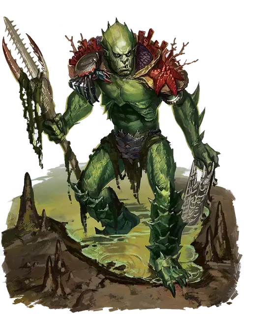

Коалинт сержант
Koalinth Sergeant
Средний Гуманоид (Гоблиноид), законно-злой

Класс Доспеха 14 (кольчуга)
Хиты 33 (6к8 + 6)
Скорость 30 футов, плавая 30 футов
| мод | спас | ||
|---|---|---|---|
| СИЛ | 14 | +2 | +2 |
| ЛОВ | 11 | +0 | +2 |
| ТЕЛ | 12 | +1 | +1 |
| мод | спас | ||
|---|---|---|---|
| ИНТ | 11 | +0 | +0 |
| МДР | 10 | +0 | +2 |
| ХАР | 12 | +1 | +1 |
Навыки Атлетика +4, Восприятие +2
Чувства тёмное зрение 60 футов, пассивное Восприятие 12
Языки Общий, Гоблинский
Опасность 2 (450 опыта)
Бонус мастерства +2
Особенности
Амфибия. Коалинт может дышать и воздухом и под водой.
Воинское превосходство. Один раз в ход коалинт может причинить дополнительный урон 7 (2к6) существу, по которому он попал атакой оружием, если это существо находится в пределах 5 футов от дееспособного союзника коалинта.
Действия
Мультиатака. Сержант совершает две рукопашные атаки Трезубцем.
Трезубец. . Рукопашная или дальнобойная атака оружием: +4 к попаданию, досягаемость 5 футов или дистанция 20/60 футов, одна цель. Попадание: 5 (1к6 + 2) колющего урона или 6 (1к8 + 2) колющего урона, если используется двумя руками для рукопашной атаки.
Сеть с крюком. Дальнобойная атака оружием: +4 к попаданию, дистанция 10/30 футов, одна цель. Попадание: 4 (1к4 + 2) колющего урона, и цель опутана. Существо может действием совершить проверку Силы Сл 12, чтобы высвободиться или высвободить другое существо из сети с крюком, оканчивая эффект в случае успеха. Нанесение 5 рубящего урона по сети (КД 12) высвобождая цель, не причиняя ей вреда, и разрушая сеть.
Реакции
Копье беспомощности (2/день). Всякий раз, когда существо в пределах 30 футов от сержанта становится опутанным, сержант может переместиться на свою скорость в сторону опутанного существа. Если сержант заканчивает свой ход в пределах досягаемости опутанного существа, он может атаковать его рукопашной атакой
Описание
Эти свирепые коалинты возглавляют специальные миссии своего народа, такие как дипломатический председатель, описаный в "Опасность в Дануотере". Коалинт сержант сосредотачивает свой гнев на наиболее значительных угрозах на поле боя, а затем устраняет их одну за другой.